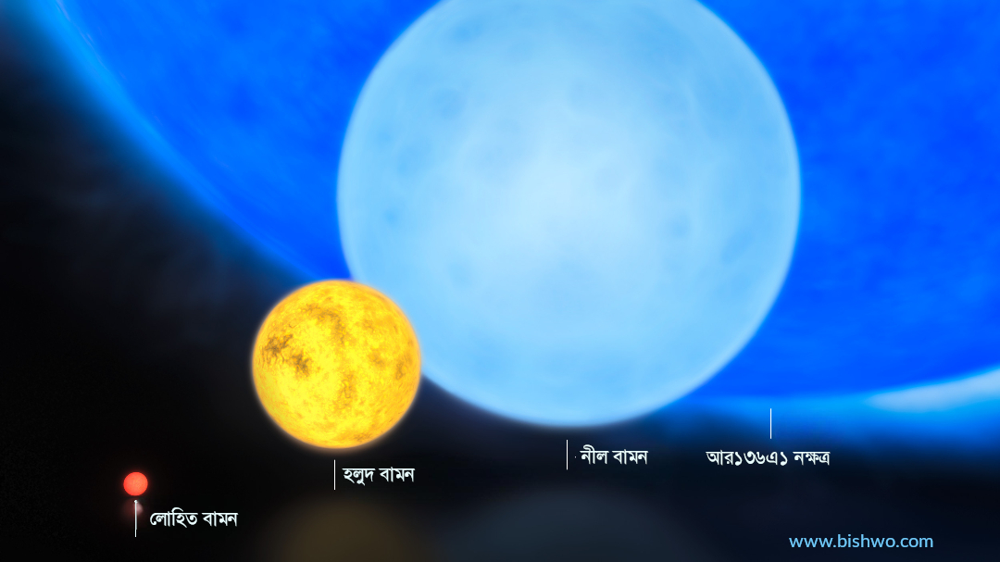

নীল বামন: যে তারার এখনও জন্ম হয়নি
নীল বামন তারার জন্ম হয় লোহিত বামন তারা থেকে। ‘হয়’ না বলে বলা উচিত ‘হবে’। কারণ মহাবিশ্বের যে বয়স, তাতে এখনও এ তারার বয়সের সময়ই আসেনি। লোহিত বামন তারা থেকে এদের জন্ম হবে। লোহিত তারারা মহাবিশ্বের সবচেয়ে ক্ষুদ্র তারা। ক্ষুদ্র তারারা আবার বাঁচে সবচেয়ে বেশিদিন।
ভর কম হওয়ার কারণে লোহিত বামনের ভেতরে নিউক্লীয় বিক্রিয়ার হার কম। ফলে জ্বালানি শেষ হতে বেশি সময় লাগে। আর এ কারণেই এরা বাঁচে বেশি। লোহিত বামনের অনেকটা জ্বালানি শেষ হলে সে পরিণত হয় নীল বামনে। কিন্তু বিক্রিয়ার হার কম হওয়ায় এ প্রক্রিয়াফ সময় লাগে অন্তত ১০ লক্ষ কোটি বছর। অবশ্য ভর সূর্যের ২৫ ভাগের বেশি হলে লোহিত বামন নীল বামন না হয়ে হয় লোহিত দানব তারা।

সূর্যের সাথে তুলনা করলে এদের বয়সের বিশালতা বোঝা যাবে। সূর্যের বর্তমান বয়স ৪৬০ কোটি বছর। এটি জ্বলবে আরও অন্তত ৫০০ কোটি। নীল বামনরা বাঁচে কয়েক লক্ষ কোটি বছর। মানে সূর্যের অন্তত একশ গুণ। তবে তাঁর চেয়েও বড় কথা হলো, এখন পর্যন্ত মহাবিশ্বে নীল বামন তারার জন্মই হয়নি। কারণ মহাবিশ্বের বর্তমান বয়স ১৩৮০ কোটি বছর। অথচ নীল বামনের এদের আদিতারা লোহিত বামনের জীবনকাল তার চেয়ে অনেক বেশি।
এখনও মহাবিশ্বে নীল বামন নেই বলে সরাসরি পর্যবেক্ষণ সম্ভব হয়নি। তবে জ্যোতির্বিদরা সিমুলেশন করে এদের অবস্থা সম্পর্কে জানার চেষ্টা করেছেন। এমনিতে নীল রঙের তারার তাপমাত্রা সবচেয়ে বেশি। তবে সাধারণ নীল রঙের তারার চেয়ে এদের তাপমাত্রা কম। নক্ষত্রের শ্রেণিবিভাগে নীল রঙের তারাদের বলা হয় O শ্রেণীর তারা। তাপমাত্রা ৩৩ হাজার কেলভিনের বেশি। এরপর আছে বি শ্রেণীর গাঢ় নীলাভ সাদা তারা। তাপমাত্রা ১০ হাজার থেকে ৩৩ হাজার। এরপরের তারার নাম A টাইপ তারা। নীলাভ সাদা রঙের এ তারাদের তাপমাত্রা ৭৩০০ থেকে ১০ হাজার কেলভিন। নীল বামনরা এই গোষ্ঠীর অন্তর্ভুক্ত। ফলে সূর্যের চেয়ে এদের পৃষ্ঠ তাপমাত্রা প্রায় দুই হাজার কেলভিন বেশি।
লোহিত বামনদের রেখে যাওয়া জ্বালানি দিয়ে নীল বামন অনেকদিন জ্বলবে। কেন্দ্রের হাইড্রোজেন শেষ হয়ে গেলে এরা হয়ে যাবে শ্বেত বামন তারা। শ্বেত ঠিক নক্ষত্র নয়, নক্ষত্রের ধ্বংসাবশেষ। শ্বেত বামনরাও দীর্ঘ সময়ে শীতল হতে হতে একসময় পরিণত হবে কালো বামন তারায়। এদের থেকে প্রায় কোনো আলো ও তাপ বের হবে না। মহাবিশ্বের বয়সের তুলনায় এদের গঠনে অনেক বেশি সময় লাগে বলে নীল বা শ্বেত বামনের মতোই এরাও বর্তমান মহাবিশ্বে নেই।